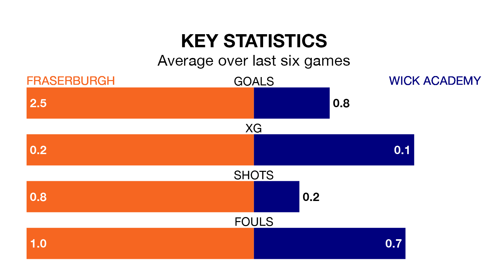

Mid-season relegation candidates Wick Academy face a challenge away against high-flying Fraserburgh at Bellslea Park on Saturday.
Wick Academy are 15th in the Highland Football League table, and have picked up three wins and four draws in their 17 games to date.
The Broch, meanwhile, are fourth in the standings with 38 points, having won 12 and drawn two of their first 18 matches, and are eight points behind table-toppers Brechin City.
With 48 goals in 18 games so far this season, Fraserburgh are the league's joint-third-highest scorers with 2.7 goals per game. And they are conceding fewer than average, letting in 24 goals at a rate of 1.3 per game.
Wick Academy, meanwhile, are below average scorers, with 1.1 goals per game, compared to a league average of 1.8. They have conceded 2.6 goals per game.
The Broch are in fantastic form in Highland Football League, with five wins and a draw from their last six games.
With no wins and two draws over that period, the visitors' form is much worse – they have taken two points from 18, compared to the home side's 16.
In the last 10 years, Fraserburgh and Wick Academy have played each other on 13 occasions. Fraserburgh won seven of them, Wick Academy three, and they drew three times.
On average, the Broch scored 2.2 goals and Wick Academy 1.2 in those matches.
Their last meeting was on September 16, when Fraserburgh won 3-0 away.
Fraserburgh's last match was on January 13, a 2-2 draw against Clachnacuddin.
Wick Academy lost 3-1 against Turriff United last time out, also on January 13.
Updated: 08:51 (UTC), 25/01/24